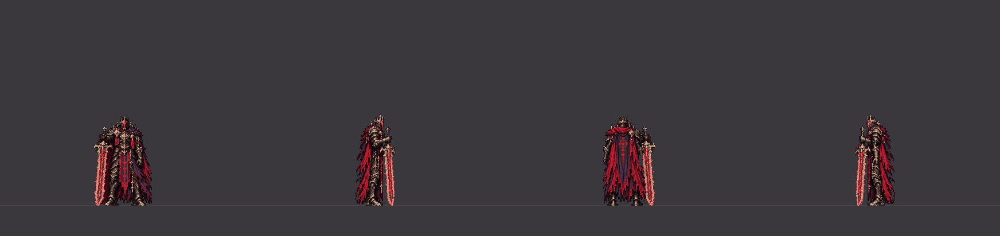

劍立在地上直接出招
以前第一張就是扛劍，劍會從地上瞬間跳到肩上；現在劍尖先往前離開地面，直接接上這一招的起手。出招的時間和判定都沒變。
王權橫掃、雙斬、三斬

劍立在地上站著 → 直接出招（前 24 幀是新畫的起手，之後是這一招本身，到砍到為止）。四個方向：朝下、朝右、朝上、朝左（1 倍）快斬連段（二連、三連）
劍立在地上站著 → 直接出招（前 14 幀是新畫的起手，之後是這一招本身，到砍到為止）。四個方向：朝下、朝右、朝上、朝左（1 倍）墜誓下劈（含延遲版）
劍立在地上站著 → 直接出招（前 24 幀是新畫的起手，之後是這一招本身，到砍到為止）。四個方向：朝下、朝右、朝上、朝左（1 倍）灰燼衝擊、雙重衝擊
劍立在地上站著 → 直接出招（前 24 幀是新畫的起手，之後是這一招本身，到砍到為止）。四個方向：朝下、朝右、朝上、朝左（1 倍）裁決突刺
劍立在地上站著 → 直接出招（前 12 幀是新畫的起手，之後是這一招本身，到砍到為止）。四個方向：朝下、朝右、朝上、朝左（1 倍）灰燼迴旋
劍立在地上站著 → 直接出招（前 16 幀是新畫的起手，之後是這一招本身，到砍到為止）。四個方向：朝下、朝右、朝上、朝左（1 倍）墜王之躍
劍立在地上站著 → 直接出招（前 12 幀是新畫的起手，之後是這一招本身，到砍到為止）。四個方向：朝下、朝右、朝上、朝左（1 倍）